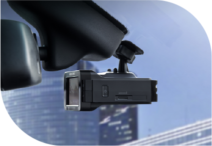
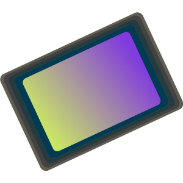
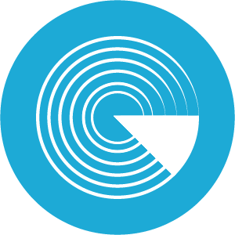

«Neoline X-COP 9000c» удобство и надёжность
Neoline X-COP 9000с – гибрид с GPS базой полицейских радаров и камер и отличным соотношением цены и качества. В устройство встроен чувствительный приемник сигналов широкого диапазона частот, который позволяет детектировать все известные полицейские радарные комплексы.
-

Видео высокого качества
Процессор Ambarella, высокотехнологичный сенсор SONY, угол обзора 135 градусов обеспечивают высокое качество видео днем и ночью.
-

Детектирует все типы радаров
Приемник сигналов широкого диапазона частот создан на базе современных комплектующих и обеспечивает уверенное детектирование всех радаров.
-

Интерфейс Easy Touch
На яркий 2” экран гибрида X-COP 9000с выводится полная информация о дорожной ситуации. Всего 4 кнопки отвечают за управление Гибридом.
Гибрид Neoline X-COP 9000с станет вашим незаменимым помощником на любой дороге, в любое время суток!